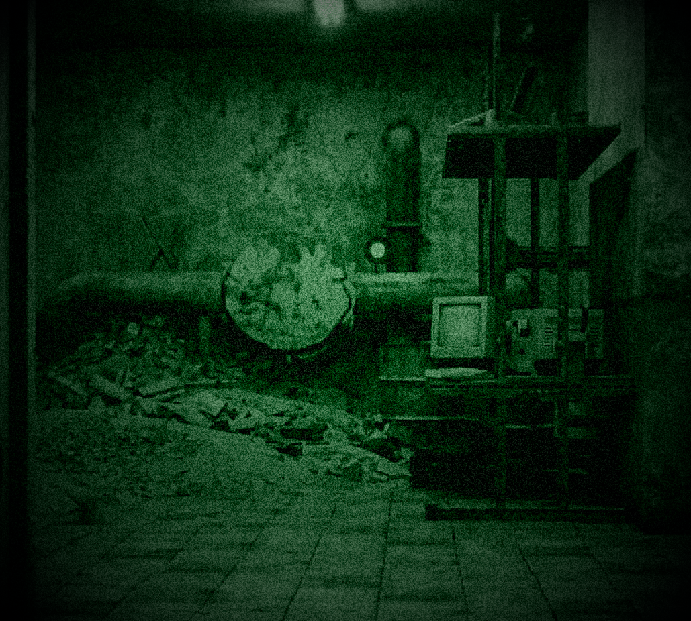
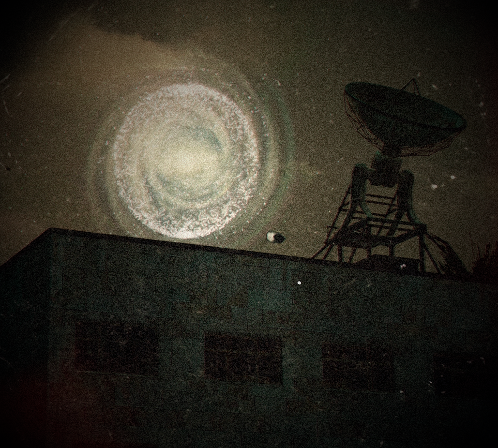
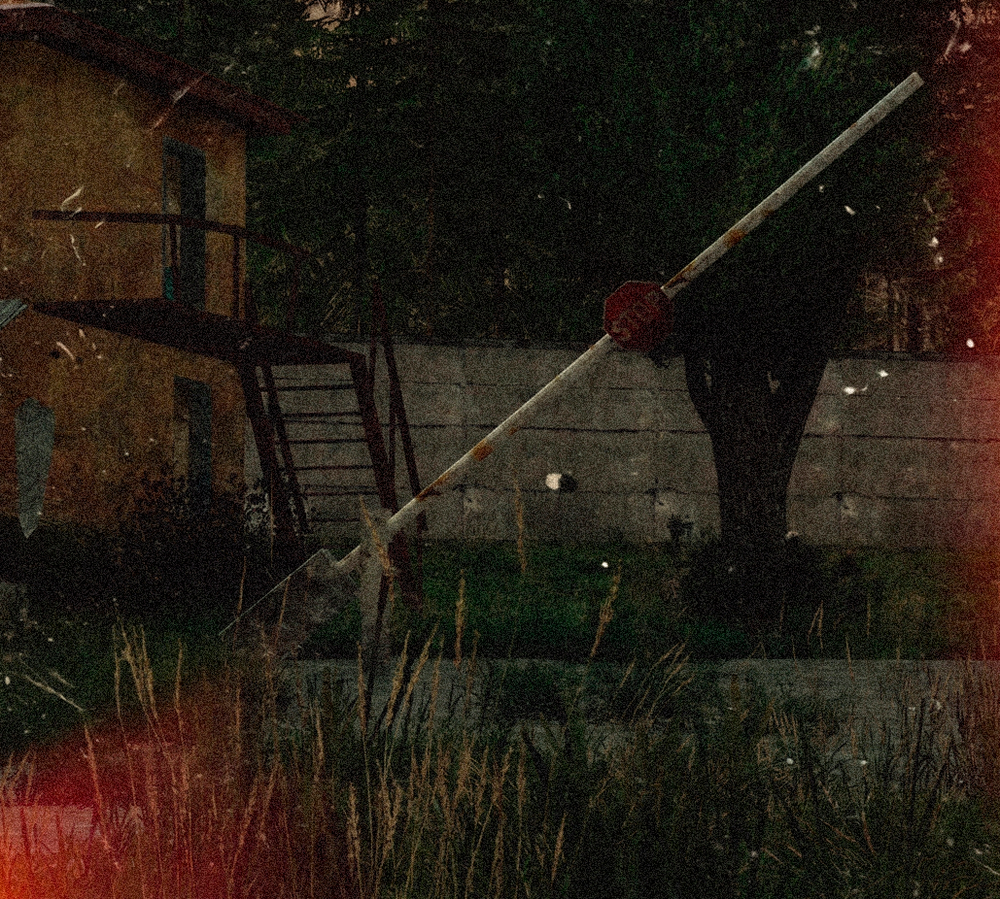

Доступ к загрузочному сектору ограничен политикой безопасности.
Корзина пуста.

NVG_REC_20090314.png
REC_20090321.png
NVG_REC_20090401.png NVG_REC_20090614.png
NVG_REC_20090614.png
[Черновой фрагмент наблюдения / Без грифа]
Первичные замеры в контрольных точках сектора выявили резкие скачкообразные отклонения. Фоновые значения нестабильны: в низинах и возле водоотводных каналов условная единица колеблется в пределах 150–190, однако при приближении к грунтовым разломам и бетонным конструкциям датчики уверенно фиксируют рост до 280–300 условных единиц.
В воздухе фиксируется взвесь тяжелых мелкодисперсных частиц с высокой ионизацией. Штатные армейские фильтры марки «ГП» приходят в негодность уже через 40–50 минут активного перемещения: сорбент спекается, провоцируя токсическое раздражение верхних дыхательных путей и металлический привкус во рту.
Требуется срочная замена снаряжения: выход в указанный периметр возможен исключительно с применением усовершенствованных противогазов изолирующего типа либо комбинированных масок с двойными керамическими предфильтрами и принудительной подачей смеси. В противном случае поражение легочной ткани наступает даже при кратковременном контакте.
[Запись обрывается. Таблицы калибровки датчиков не прикреплены. Подпись отсутствует.]
Файл KVADRAT_8L.gpx содержит зашифрованную сетку эвакуации.
Для считывания подключите внешний защищенный накопитель с файловой системой FAT16.
Экспорт координат на съемный диск...
Осталось: 3 мин. 00 сек.
Для доступа к диску (D:) требуется установка пакетов обновления.
Вы готовы установить обновление сейчас?
Идет установка пакетов... Пожалуйста, подождите.
Осталось: 15 мин. 00 сек.